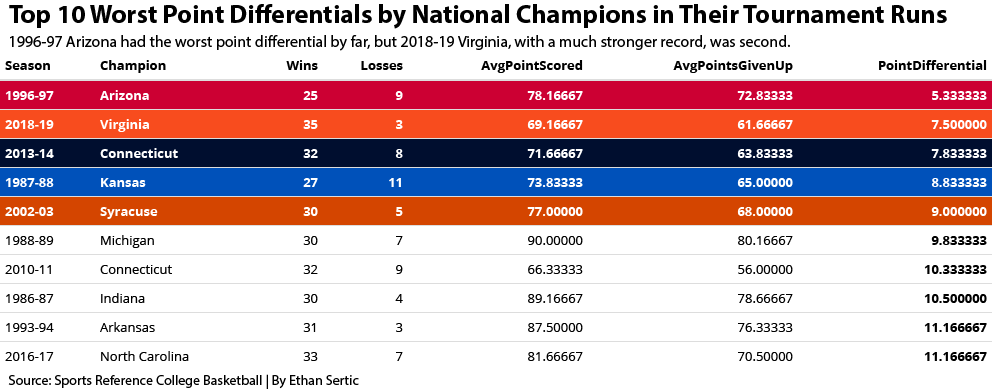

It’s one of the best sporting events every year. The NCAA Tournament and March Madness is amazing for many sports fans. New moments, iconic games, and legacies are created every year during March Madness. There have been many different schools to win a national title in college basketball and every school has the chance to be a champion.
The die-hard college basketball fans and media always like to compare who is the greatest college basketball national champion ever. No one talks about out of those national champions, which one is the worst. They also don’t talk about how adding the 3-point shot to college basketball in the 1986-87 season could have helped these champions. And given that it’s March Madness time right now and near the end of the college basketball season, it begs the question: Who is the worst team to win a national title in college basketball since the NCAA introduced the 3-point line for the 1986-87 season?
Let’s look at some numbers.
library(tidyverse)## ── Attaching packages ─────────────────────────────────────── tidyverse 1.3.0 ──## ✓ ggplot2 3.3.3 ✓ purrr 0.3.4
## ✓ tibble 3.0.5 ✓ dplyr 1.0.3
## ✓ tidyr 1.1.2 ✓ stringr 1.4.0
## ✓ readr 1.4.0 ✓ forcats 0.5.0## ── Conflicts ────────────────────────────────────────── tidyverse_conflicts() ──
## x dplyr::filter() masks stats::filter()
## x dplyr::lag() masks stats::lag()library(kableExtra)##
## Attaching package: 'kableExtra'## The following object is masked from 'package:dplyr':
##
## group_rowslibrary(scales)##
## Attaching package: 'scales'## The following object is masked from 'package:purrr':
##
## discard## The following object is masked from 'package:readr':
##
## col_factorlibrary(ggalt)## Registered S3 methods overwritten by 'ggalt':
## method from
## grid.draw.absoluteGrob ggplot2
## grobHeight.absoluteGrob ggplot2
## grobWidth.absoluteGrob ggplot2
## grobX.absoluteGrob ggplot2
## grobY.absoluteGrob ggplot2library(ggrepel)
CBBChamps <- read_csv("CBBChampsData.csv")##
## ── Column specification ────────────────────────────────────────────────────────
## cols(
## .default = col_double(),
## Season = col_character(),
## Champion = col_character()
## )
## ℹ Use `spec()` for the full column specifications.The data set I’ll be working with are season statistics for each national champion from Sports Reference’s college basketball site. I also added how many points each champion scored and gave up during their NCAA Tournament run in the data set. These are two of the stats I will be relying on. 3-point percentage, wins, points, and opponent points from the champion’s entire season will be used too.
First, I need to group the national champions by the season they won it and what their wins and losses were during the season.
WorstTourneyPointDefs <- CBBChamps %>%
group_by(Season, Champion, Wins, Losses) %>%
summarise(
AvgPointScored = mean(TournamentPoints)/TournamentGames,
AvgPointsGivenUp = mean(OpponentTournamentPoints)/TournamentGames) %>%
mutate(PointDifferential = AvgPointScored - AvgPointsGivenUp) %>%
arrange((PointDifferential)) %>%
ungroup() %>%
top_n(10, wt=-PointDifferential)## `summarise()` has grouped output by 'Season', 'Champion', 'Wins'. You can override using the `.groups` argument.I’m interested in looking at what each national champions’ point differential was during their NCAA Tournament run. I’m going to find the average points scored and average points given up for each team. Once I get this, I’ll be able to get the difference between the average points scored and the average points given up which will create my point differential stat.
The first question we’ll answer is who has the worst point differential out of the national champions? Here’s the top 10 of the worst.
WorstTourneyPointDefs %>%
kable() %>%
kable_styling(bootstrap_options = c("striped", "condensed")) %>%
row_spec(1, bold = T, color = "white", background = "#CC0033") %>%
row_spec(2, bold = T, color = "white", background = "#F84C1E") %>%
row_spec(3, bold = T, color = "white", background = "#000E2F") %>%
row_spec(4, bold = T, color = "white", background = "#0051BA") %>%
row_spec(5, bold = T, color = "white", background = "#D44500") %>%
column_spec(7, bold=T) %>%
save_kable("WorstCBBChampsPtDif.pdf") The 1996-97 Arizona team had the worst point differential by far out of any of the national champions. At around 5.33, they’re over two points worse in point differential compared to the 2018-19 Virginia team that was at 7.5. The 2018-19 Virginia team had a much better record of 35 wins and 3 losses compared to the 1996-97 Arizona team who only had 25 wins and 9 losses. The Virginia team didn’t score as much Arizona, but played better defense. The only other team in the top 10 worst point differentials who didn’t get 30 wins in their national title season was 1987-88 Kansas. Their point differential was about 3.5 points better than the 1996-97 Arizona team. The 1996-97 Arizona team played just good enough in all its tournament games in order to survive and advance.
What about how each national champion shot behind the 3-point line after it was introduced for the 1986-87 season? Does this Arizona team shoot as bad from behind the arc as their point differential may indicate? Or is there another champion that still won games even though they weren’t a great 3-point shooting team? First, I’ll group the champions by their season like the point differentials, but I’ll summarize each team with their 3-point percentage and how many wins they had.
CBBChamps %>%
group_by(Season, Champion) %>%
summarise(`3P%`, Wins) %>%
arrange(`3P%`)## `summarise()` has grouped output by 'Season'. You can override using the `.groups` argument.## # A tibble: 33 x 4
## # Groups: Season [33]
## Season Champion `3P%` Wins
## <chr> <chr> <dbl> <dbl>
## 1 2010-11 Connecticut 0.329 32
## 2 2012-13 Louisville 0.333 35
## 3 1987-88 Kansas 0.335 27
## 4 1994-95 UCLA 0.341 31
## 5 1998-99 Connecticut 0.344 34
## 6 2002-03 Syracuse 0.344 30
## 7 2016-17 North Carolina 0.355 33
## 8 2015-16 Villanova 0.362 35
## 9 1997-98 Kentucky 0.367 35
## 10 1996-97 Arizona 0.37 25
## # … with 23 more rowsThen, I’m going to make new data with the worst 3-point shooting champions that had less than 30 wins to see if the worst winning teams were also bad 3-point shooting teams.
WorstShootingChamps <- CBBChamps %>%
filter(Wins < 30)For this, I am going to use a scatter plot that shows how each national champion did with their 3-point shooting percentage on the x-axis and how many wins they had on the y-axis. There are two national champions that had less than 30 wins with the 1987-88 Kansas team and the 1996-97 Arizona team. I’ll highlight both teams in blue and have a circle around them to show where they’re compared to the rest of the national champions in 3-point shooting percentage and wins.
ggplot() + geom_point(data=CBBChamps, aes(x=`3P%`, y=Wins), color = "grey") +
geom_point(data = WorstShootingChamps, aes(x=`3P%`, y=Wins), color = "#0051BA") + geom_encircle(data=WorstShootingChamps, aes(x=`3P%`, y=Wins), s_shape=.5, expand=.02, colour="red") +
geom_text(aes(x=0.359, y=28, label="1987-88 Kansas and 1996-97 Arizona")) +
labs(
title="Does 3-Point shooting % affect the greatness of a national champion?",
subtitle="1987-88 Kansas and 1996-97 Arizona had the least amount of wins and were two of the 10 worst 3-point shooting teams.",
caption="Source: Sports Reference College Basketball | By Ethan Sertic",
x="3-Point %", y="Wins") +
theme_minimal() +
theme(
plot.title = element_text(size = 14, face = "bold"),
axis.title = element_text(size = 7.75),
plot.subtitle = element_text(size = 8.25),
panel.grid.minor = element_blank()
) There are some other national champions who shot even worse than the 1987-88 Kansas and 1996-97 Arizona teams and still won more games during their national championship season. Both teams though, were in the top 10 worst 3-point shooting champions. The scatter plot does show that many teams had a 3-point shooting percentage greater than 38% and with 30 wins or more. The Kansas and Arizona teams didn’t accomplish either feat. Shooting really good from behind the 3-point line can help teams win more games during the season, but there are different ways to win six games in March and become a national champion.
There are some other national champions who shot even worse than the 1987-88 Kansas and 1996-97 Arizona teams and still won more games during their national championship season. Both teams though, were in the top 10 worst 3-point shooting champions. The scatter plot does show that many teams had a 3-point shooting percentage greater than 38% and with 30 wins or more. The Kansas and Arizona teams didn’t accomplish either feat. Shooting really good from behind the 3-point line can help teams win more games during the season, but there are different ways to win six games in March and become a national champion.
Points <- CBBChamps %>%
group_by(Season, Champion) %>%
summarise(
TotalPoints = sum(Points),
TotalOpponentPoints = sum(OpponentPoints),
TotalGames = sum(Games),
TotalWins = sum(Wins)) %>%
mutate(
PointsPerGame = TotalPoints/TotalGames,
OppPointsPerGame = TotalOpponentPoints/TotalGames) %>%
arrange(PointsPerGame)## `summarise()` has grouped output by 'Season'. You can override using the `.groups` argument.I wanted to know how each national champion was able to win based on what basketball is really about. The question is: How many points did the champion score per game and how many points did they give up per game? To create each champions’ points per game, I had to divide their total points by how many total games they played. The same thing for their defense by dividing their total opponent points by how many games they played.
Points %>%
ungroup() %>%
summarise(Offense = mean(PointsPerGame), Defense = mean(OppPointsPerGame))## # A tibble: 1 x 2
## Offense Defense
## <dbl> <dbl>
## 1 82.3 67.5By adding how many total wins each champion had with the points per game and opponent points per game, I decided a bubble chart would work good for this. It was important to find what the average points per game and opponent points per game were for all the national champions. I was able to find this stat and I could use the averages as lines to determine where each of the national champions were located on the bubble chart. This bubble chart scaled by number of wins shows that there was something similar for the national champions.
ggplot() + geom_point(data=Points, aes(x=PointsPerGame, y=OppPointsPerGame, size=TotalWins), alpha = .3) + scale_size(range=c(3,8), name = "Wins") +
geom_vline(xintercept = 82.29267, color="red") +
geom_hline(yintercept = 67.4671, color="red") +
geom_text(aes(x=87.5, y=77, label="Great Offense, Average Defense"), color="blue") +
geom_text(aes(x=77.35, y=57, label="Average Offense, Great Defense"), color="blue") +
labs(
title="Does a national champion need elite offense and defense?",
subtitle="A champion doesn't need to have both, but needs one great side in order to win a title.", caption="Source: Sports Reference College Basketball | By Ethan Sertic",
x="Points Per Game", y="Opponent Points Per Game") +
theme_minimal() +
theme(
plot.title = element_text(size = 16, face = "bold"),
axis.title = element_text(size = 9),
plot.subtitle = element_text(size=10),
panel.grid.minor = element_blank()
) The top right of the bubble chart meant that the the champion had great offense with scoring more than the average of 82.3 points per game, but had an average defense because they gave up more than the average opponent points per game over 67.5. The bottom left of the bubble chart was the inverse of the top right. These champions had average offense with less than 82.3 points per game, but great defense as they gave up less than 67.5 opponent points per game. There were a couple outlier champions including the 1987-88 Kansas team that only had 27 wins, who gave up more than the average opponent points per game and didn’t score more than the average points per game. The bubble chart showed that in order to be a national champion, a team just needs to have either a great offense or a great defense, not both. A champion needs one side of the ball to be great and the other side of the ball has to just be average.
The top right of the bubble chart meant that the the champion had great offense with scoring more than the average of 82.3 points per game, but had an average defense because they gave up more than the average opponent points per game over 67.5. The bottom left of the bubble chart was the inverse of the top right. These champions had average offense with less than 82.3 points per game, but great defense as they gave up less than 67.5 opponent points per game. There were a couple outlier champions including the 1987-88 Kansas team that only had 27 wins, who gave up more than the average opponent points per game and didn’t score more than the average points per game. The bubble chart showed that in order to be a national champion, a team just needs to have either a great offense or a great defense, not both. A champion needs one side of the ball to be great and the other side of the ball has to just be average.
So who is the worst team to ever win a national title in the last 35 years? It’s a toss-up between the 1987-88 Kansas Jayhawks and the 1996-97 Arizona Wildcats.